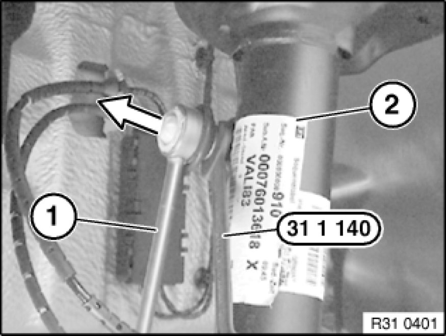
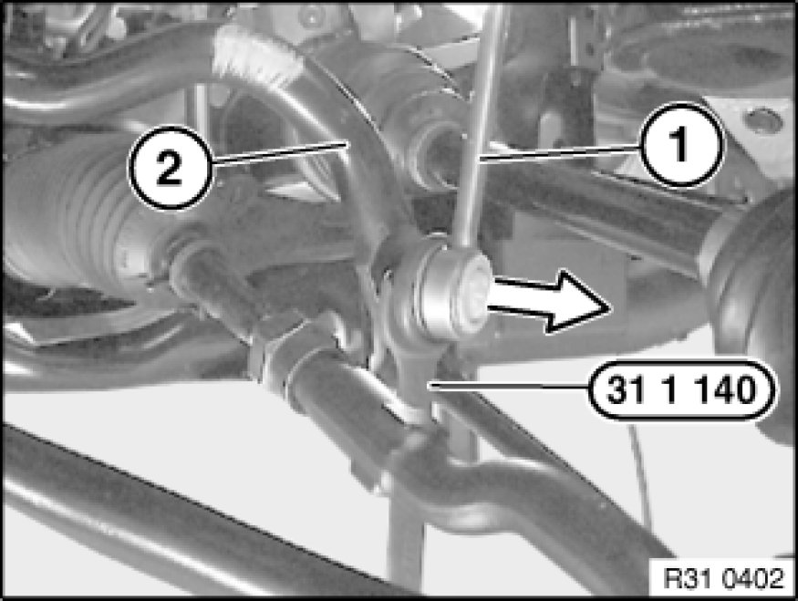

Removing and Installing/Replacing Push Rod (Stabilizer Link) for Left/Right Stabilizer
31 35 005 - Removing and installing/replacing push rod (stabilizer link) for left/right stabilizer

Special tools required:
- 31 1 140 31 1 140 Open-End Wrench WAF 16/18

Release nut - grip with special tool 31 1 140 31 1 140 Open-End Wrench WAF 16/18.
Remove hinged bracket (1) from stabilizer (2).
Installation:
Replace self-locking nut.
Tightening torque 31 35 5AZ Front Axle - Stabilizer Bar.

Release nut - grip with special tool 31 1 140 31 1 140 Open-End Wrench WAF 16/18.
Remove hinged bracket (1) from stabilizer (2).
Installation:
Replace self-locking nut.
Tightening torque 31 35 5AZ Front Axle - Stabilizer Bar.